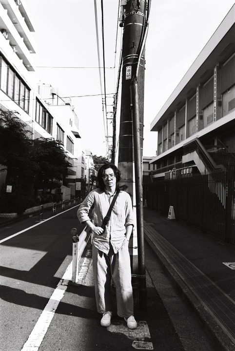
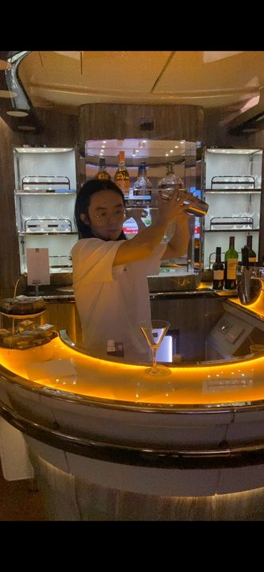
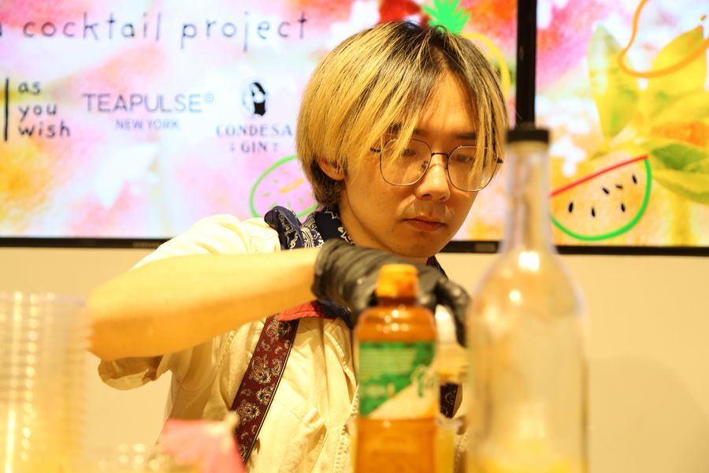
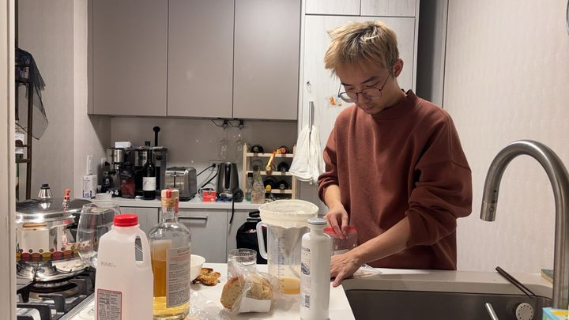
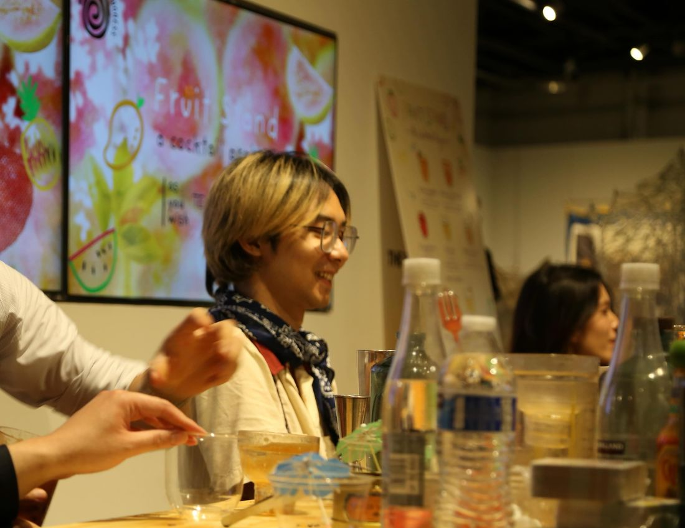
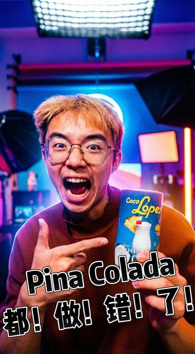

About Enzo
Curiosity is the starting point.
A wine background. An open mind.
A world of things worth tasting.
Enzo is a New York-based mixologist, beverage researcher, and hospitality consultant. His wine knowledge developed during his university years in California; his curiosity extends to spirits, beer, coffee, tea, global spices, and culinary traditions.
Exchanges with bartenders at Hope & Sesame’s Shenzhen location helped shape his approach. Exploring drinking cultures in Ginza, Bali, Barcelona, and the Caribbean brought new perspectives on flavor, context, and the rituals around a drink.
Today, his practice moves between original drinks, fermentation, independent bar consulting, and creative collaborations. The question stays simple: what would make this guest happiest?





